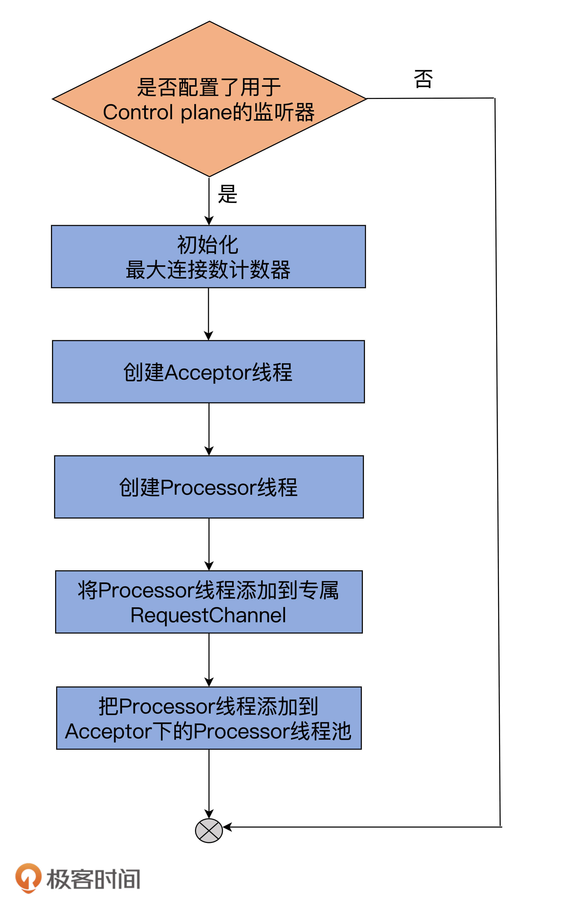

- 00 导读 构建Kafka工程和源码阅读环境、Scala语言热身.md
- 00 开篇词 阅读源码，逐渐成了职业进阶道路上的“必选项”.md
- 00 重磅加餐 带你快速入门Scala语言.md
- 01 日志段：保存消息文件的对象是怎么实现的？.md
- 02 日志（上）：日志究竟是如何加载日志段的？.md
- 03 日志（下）：彻底搞懂Log对象的常见操作.md
- 04 索引（上）：改进的二分查找算法在Kafka索引的应用.md
- 05 索引（下）：位移索引和时间戳索引的区别是什么？.md
- 06 请求通道：如何实现Kafka请求队列？.md
- 07 SocketServer（上）：Kafka到底是怎么应用NIO实现网络通信的？.md
- 08 SocketServer（中）：请求还要区分优先级？.md
- 09 SocketServer（下）：请求处理全流程源码分析.md
- 10 KafkaApis：Kafka最重要的源码入口，没有之一.md
- 11 Controller元数据：Controller都保存有哪些东西？有几种状态？.md
- 12 ControllerChannelManager：Controller如何管理请求发送？.md
- 13 ControllerEventManager：变身单线程后的Controller如何处理事件？.md
- 14 Controller选举是怎么实现的？.md
- 15 如何理解Controller在Kafka集群中的作用？.md
- 16 TopicDeletionManager： Topic是怎么被删除的？.md
- 17 ReplicaStateMachine：揭秘副本状态机实现原理.md
- 18 PartitionStateMachine：分区状态转换如何实现？.md
- 19 TimingWheel：探究Kafka定时器背后的高效时间轮算法.md
- 20 DelayedOperation：Broker是怎么延时处理请求的？.md
- 21 AbstractFetcherThread：拉取消息分几步？.md
- 22 ReplicaFetcherThread：Follower如何拉取Leader消息？.md
- 23 ReplicaManager（上）：必须要掌握的副本管理类定义和核心字段.md
- 24 ReplicaManager（中）：副本管理器是如何读写副本的？.md
- 25 ReplicaManager（下）：副本管理器是如何管理副本的？.md
- 26 MetadataCache：Broker是怎么异步更新元数据缓存的？.md
- 27 消费者组元数据（上）：消费者组都有哪些元数据？.md
- 28 消费者组元数据（下）：Kafka如何管理这些元数据？.md
- 29 GroupMetadataManager：组元数据管理器是个什么东西？.md
- 30 GroupMetadataManager：位移主题保存的只是位移吗？.md
- 31 GroupMetadataManager：查询位移时，不用读取位移主题？.md
- 32 GroupCoordinator：在Rebalance中，Coordinator如何处理成员入组？.md
- 33 GroupCoordinator：在Rebalance中，如何进行组同步？.md
- 特别放送（一）经典的Kafka学习资料有哪些？.md
- 特别放送（三）我是怎么度过日常一天的？.md
- 特别放送（二）一篇文章带你了解参与开源社区的全部流程.md
- 特别放送（五） Kafka 社区的重磅功能：移除 ZooKeeper 依赖.md
- 特别放送（四）20道经典的Kafka面试题详解.md
- 结束语 源码学习，我们才刚上路呢.md
08 SocketServer（中）：请求还要区分优先级？
你好，我是胡夕。
在上节课，我给你详细地介绍了Kafka网络层的架构，以及SocketServer组件中的Acceptor线程和Processor线程是如何利用Java NIO实现网络通信的，还简单提到了请求队列和响应队列。
今天，我们接着说SocketServer源码，重点学习下社区是如何对不同类型的请求进行优先级划分的。
案例分享
在Kafka中，处理请求是不区分优先级的，Kafka对待所有请求都一视同仁。这种绝对公平的策略有时候是有问题的。我跟你分享一个真实的案例，你就明白了。我敢保证，你在真实的线上系统中一定遇到过类似的问题。
曾经，我们在生产环境中创建过一个单分区双副本的主题，当时，集群中的Broker A机器保存了分区的Leader副本，Broker B保存了Follower副本。某天，外部业务量激增，导致Broker A瞬间积压了大量的未处理PRODUCE请求。更糟的是，运维人员“不凑巧”地执行了一次Preferred Leader选举，将Broker B显式地调整成了Leader。
这个时候，问题就来了：如果Producer程序把acks设置为all，那么，在LeaderAndIsr请求（它是负责调整副本角色的，比如Follower和Leader角色转换等）之前积压的那些PRODUCE请求就无法正常完成了，因为这些请求要一直等待ISR中所有Follower副本同步完成。
但是，此时，Broker B成为了Leader，它上面的副本停止了拉取消息，这就可能出现一种结果：这些未完成的PRODUCE请求会一直保存在Broker A上的Purgatory缓存中。Leader/Follower的角色转换，导致无法完成副本间同步，所以这些请求无法被成功处理，最终Broker A抛出超时异常，返回给Producer程序。
值得一提的是，Purgatory缓存是Broker端暂存延时请求的地方。课程后面我会详细介绍这个组件。
这个问题就是对请求不区分优先级造成的，后来，我们在SocketServer源码中确认了此事。同时，结合阅读源码得到的知识，我在Jira官网搜到了对应的Jira ticket，进而完整地了解了社区是如何解决该问题的。
其实，这也是我非常推荐你深入学习Kafka的一个方法：根据实际环境中碰到的问题找到对应的源码，仔细阅读它，形成自己的解决思路，然后去社区印证自己方案的优劣。在不断地循环这个过程的同时，你会发现，你对Kafka的代码越来越了解了，而且能够很轻松地解决线上环境的各种问题。
说了这么多，相信你已经迫不及待地想要跟我一起阅读这部分源码了，那我们就正式开始吧。
必要术语和概念
在阅读SocketServer代码、深入学习请求优先级实现机制之前，我们要先掌握一些基本概念，这是我们理解后面内容的基础。
1. Data plane和Control plane
社区将Kafka请求类型划分为两大类：数据类请求和控制类请求。Data plane和Control plane的字面意思是数据面和控制面，各自对应数据类请求和控制类请求，也就是说Data plane负责处理数据类请求，Control plane负责处理控制类请求。
目前，Controller与Broker交互的请求类型有3种：LeaderAndIsrRequest、StopReplicaRequest和UpdateMetadataRequest。这3类请求属于控制类请求，通常应该被赋予高优先级。像我们熟知的PRODUCE和FETCH请求，就是典型的数据类请求。
对这两大类请求区分处理，是SocketServer源码实现的核心逻辑。
2. 监听器（Listener）
目前，源码区分数据类请求和控制类请求不同处理方式的主要途径，就是通过监听器。也就是说，创建多组监听器分别来执行数据类和控制类请求的处理代码。
在Kafka中，Broker端参数listeners和advertised.listeners就是用来配置监听器的。在源码中，监听器使用EndPoint类来定义，如下面代码所示：
case class EndPoint(host: String, port: Int, listenerName: ListenerName, securityProtocol: SecurityProtocol) {
// 构造完整的监听器连接字符串
// 格式为：监听器名称://主机名：端口
// 比如：PLAINTEXT://kafka-host:9092
def connectionString: String = {
val hostport =
if (host == null)
":"+port
else
Utils.formatAddress(host, port)
listenerName.value + "://" + hostport
}
// clients工程下有一个Java版本的Endpoint类供clients端代码使用
// 此方法是构造Java版本的Endpoint类实例
def toJava: JEndpoint = {
new JEndpoint(listenerName.value, securityProtocol, host, port)
}
}
每个EndPoint对象定义了4个属性，我们分别来看下。
- host：Broker主机名。
- port：Broker端口号。
- listenerName：监听器名字。目前预定义的名称包括PLAINTEXT、SSL、SASL_PLAINTEXT和SASL_SSL。Kafka允许你自定义其他监听器名称，比如CONTROLLER、INTERNAL等。
- securityProtocol：监听器使用的安全协议。Kafka支持4种安全协议，分别是PLAINTEXT、SSL、SASL_PLAINTEXT和SASL_SSL。
这里简单提一下，Broker端参数listener.security.protocol.map用于指定不同名字的监听器都使用哪种安全协议。
我举个例子，如果Broker端相应参数配置如下：
listener.security.protocol.map=CONTROLLER:PLAINTEXT,INTERNAL:PLAINTEXT,EXTERNAL:SSL
listeners=CONTROLLER://192.1.1.8:9091,INTERNAL://192.1.1.8:9092,EXTERNAL://10.1.1.5:9093
那么，这就表示，Kafka配置了3套监听器，名字分别是CONTROLLER、INTERNAL和EXTERNAL，使用的安全协议分别是PLAINTEXT、PLAINTEXT和SSL。
有了这些基础知识，接下来，我们就可以看一下SocketServer是如何实现Data plane与Control plane的分离的。
当然，在此之前，我们要先了解下SocketServer的定义。
SocketServer定义
首先，我们来看下SocketServer类有哪些基础属性。我使用思维导图给你展示一下跟实现请求优先级相关的字段或属性：

这些字段都是啥意思呢？我们结合代码来看下。
class SocketServer(val config: KafkaConfig,
val metrics: Metrics,
val time: Time,
val credentialProvider: CredentialProvider)
extends Logging with KafkaMetricsGroup with BrokerReconfigurable {
// SocketServer实现BrokerReconfigurable trait表明SocketServer的一些参数配置是允许动态修改的
// 即在Broker不停机的情况下修改它们
// SocketServer的请求队列长度，由Broker端参数queued.max.requests值而定，默认值是500
private val maxQueuedRequests = config.queuedMaxRequests
......
// data-plane
private val dataPlaneProcessors = new ConcurrentHashMap[Int, Processor]() // 处理数据类请求的Processor线程池
// 处理数据类请求的Acceptor线程池，每套监听器对应一个Acceptor线程
private[network] val dataPlaneAcceptors = new ConcurrentHashMap[EndPoint, Acceptor]()
// 处理数据类请求专属的RequestChannel对象
val dataPlaneRequestChannel = new RequestChannel(maxQueuedRequests, DataPlaneMetricPrefix)
// control-plane
// 用于处理控制类请求的Processor线程
// 注意：目前定义了专属的Processor线程而非线程池处理控制类请求
private var controlPlaneProcessorOpt : Option[Processor] = None
private[network] var controlPlaneAcceptorOpt : Option[Acceptor] = None
// 处理控制类请求专属的RequestChannel对象
val controlPlaneRequestChannelOpt: Option[RequestChannel] = config.controlPlaneListenerName.map(_ => new RequestChannel(20, ControlPlaneMetricPrefix))
......
}
首先，SocketServer类定义了一个maxQueuedRequests字段，它定义了请求队列的最大长度。默认值是Broker端queued.max.requests参数值。
其次，在上面的代码中，你一定看到了SocketServer实现了BrokerReconfigurable接口（在Scala中是trait）。这就说明，SocketServer中的某些配置，是允许动态修改值的。如果查看SocketServer伴生对象类的定义的话，你能找到下面这些代码：
object SocketServer {
......
val ReconfigurableConfigs = Set(
KafkaConfig.MaxConnectionsPerIpProp,
KafkaConfig.MaxConnectionsPerIpOverridesProp,
KafkaConfig.MaxConnectionsProp)
......
}
根据这段代码，我们可以知道，Broker端参数max.connections.per.ip、max.connections.per.ip.overrides和max.connections是可以动态修改的。
另外，在我们刚刚看的SocketServer定义的那段代码中，Data plane和Control plane注释下面分别定义了一组变量，即Processor线程池、Acceptor线程池和RequestChannel实例。
- Processor线程池：即上节课提到的网络线程池，负责将请求高速地放入到请求队列中。
- Acceptor线程池：保存了SocketServer为每个监听器定义的Acceptor线程，此线程负责分发该监听器上的入站连接建立请求。
- RequestChannel：承载请求队列的请求处理通道。
严格地说，对于Data plane来说，线程池的说法是没有问题的，因为Processor线程确实有很多个，而Acceptor也可能有多个，因为SocketServer会为每个EndPoint（即每套监听器）创建一个对应的Acceptor线程。
但是，对于Control plane而言，情况就不一样了。
细心的你一定发现了，Control plane那组属性变量都是以Opt结尾的，即它们都是Option类型。这说明了一个重要的事实：你完全可以不使用Control plane套装，即你可以让Kafka不区分请求类型，就像2.2.0之前设计的那样。
但是，一旦你开启了Control plane设置，其Processor线程就只有1个，Acceptor线程也是1个。另外，你要注意，它对应的RequestChannel里面的请求队列长度被硬编码成了20，而不是一个可配置的值。这揭示了社区在这里所做的一个假设：即控制类请求的数量应该远远小于数据类请求，因而不需要为它创建线程池和较深的请求队列。
创建Data plane所需资源
知道了SocketServer类的定义之后，我们就可以开始学习SocketServer是如何为Data plane和Control plane创建所需资源的操作了。我们先来看为Data plane创建资源。
SocketServer的createDataPlaneAcceptorsAndProcessors方法负责为Data plane创建所需资源。我们看下它的实现：
private def createDataPlaneAcceptorsAndProcessors(
dataProcessorsPerListener: Int, endpoints: Seq[EndPoint]): Unit = {
// 遍历监听器集合
endpoints.foreach { endpoint =>
// 将监听器纳入到连接配额管理之下
connectionQuotas.addListener(config, endpoint.listenerName)
// 为监听器创建对应的Acceptor线程
val dataPlaneAcceptor = createAcceptor(endpoint, DataPlaneMetricPrefix)
// 为监听器创建多个Processor线程。具体数目由num.network.threads决定
addDataPlaneProcessors(dataPlaneAcceptor, endpoint, dataProcessorsPerListener)
// 将<监听器，Acceptor线程>对保存起来统一管理
dataPlaneAcceptors.put(endpoint, dataPlaneAcceptor)
info(s"Created data-plane acceptor and processors for endpoint : ${endpoint.listenerName}")
}
}
这段代码的逻辑非常清晰，我用一张图来解释说明下：

createDataPlaneAcceptorsAndProcessors方法会遍历你配置的所有监听器，然后为每个监听器执行下面的逻辑。
- 初始化该监听器对应的最大连接数计数器。后续这些计数器将被用来确保没有配额超限的情形发生。
- 为该监听器创建Acceptor线程，也就是调用Acceptor类的构造函数，生成对应的Acceptor线程实例。
- 创建Processor线程池。对于Data plane而言，线程池的数量由Broker端参数num.network.threads决定。
- 将<监听器，Acceptor线程>对加入到Acceptor线程池统一管理。
切记，源码会为每套用于Data plane的监听器执行以上这4步。
举个例子，假设你配置listeners=PLAINTEXT://localhost:9092, SSL://localhost:9093，那么在默认情况下，源码会为PLAINTEXT和SSL这两套监听器分别创建一个Acceptor线程和一个Processor线程池。
需要注意的是，具体为哪几套监听器创建是依据配置而定的，最重要的是，Kafka只会为Data plane所使的监听器创建这些资源。至于如何指定监听器到底是为Data plane所用，还是归Control plane，我会再详细说明。
创建Control plane所需资源
前面说过了，基于控制类请求的负载远远小于数据类请求负载的假设，Control plane的配套资源只有1个Acceptor线程 + 1个Processor线程 + 1个深度是20的请求队列而已。和Data plane相比，这些配置稍显寒酸，不过在大部分情况下，应该是够用了。
SocketServer提供了createControlPlaneAcceptorAndProcessor方法，用于为Control plane创建所需资源，源码如下：
private def createControlPlaneAcceptorAndProcessor(
endpointOpt: Option[EndPoint]): Unit = {
// 如果为Control plane配置了监听器
endpointOpt.foreach { endpoint =>
// 将监听器纳入到连接配额管理之下
connectionQuotas.addListener(config, endpoint.listenerName)
// 为监听器创建对应的Acceptor线程
val controlPlaneAcceptor = createAcceptor(endpoint, ControlPlaneMetricPrefix)
// 为监听器创建对应的Processor线程
val controlPlaneProcessor = newProcessor(nextProcessorId, controlPlaneRequestChannelOpt.get, connectionQuotas, endpoint.listenerName, endpoint.securityProtocol, memoryPool)
controlPlaneAcceptorOpt = Some(controlPlaneAcceptor)
controlPlaneProcessorOpt = Some(controlPlaneProcessor)
val listenerProcessors = new ArrayBuffer[Processor]()
listenerProcessors += controlPlaneProcessor
// 将Processor线程添加到控制类请求专属RequestChannel中
// 即添加到RequestChannel实例保存的Processor线程池中
controlPlaneRequestChannelOpt.foreach(
_.addProcessor(controlPlaneProcessor))
nextProcessorId += 1
// 把Processor对象也添加到Acceptor线程管理的Processor线程池中
controlPlaneAcceptor.addProcessors(listenerProcessors, ControlPlaneThreadPrefix)
info(s"Created control-plane acceptor and processor for endpoint : ${endpoint.listenerName}")
}
}
我同样使用一张流程图来说明：

总体流程和createDataPlaneAcceptorsAndProcessors非常类似，只是方法开头需要判断是否配置了用于Control plane的监听器。目前，Kafka规定只能有1套监听器用于Control plane，而不能像Data plane那样可以配置多套监听器。
如果认真看的话，你会发现，上面两张图中都没有提到启动Acceptor和Processor线程。那这些线程到底是在什么时候启动呢？
实际上，Processor和Acceptor线程是在启动SocketServer组件之后启动的，具体代码在KafkaServer.scala文件的startup方法中，如下所示：
// KafkaServer.scala
def startup(): Unit = {
try {
info("starting")
......
// 创建SocketServer组件
socketServer = new SocketServer(config, metrics, time, credentialProvider)
// 启动SocketServer，但不启动Processor线程
socketServer.startup(startProcessingRequests = false)
......
// 启动Data plane和Control plane的所有线程
socketServer.startProcessingRequests(authorizerFutures)
......
} catch {
......
}
}
咦？还是没看到启动Acceptor和Processor线程的代码啊？实际上，SocketServer的startProcessingRequests方法就是启动这些线程的方法。我们看下这个方法的逻辑：
def startProcessingRequests(authorizerFutures: Map[Endpoint, CompletableFuture[Void]] = Map.empty): Unit = {
info("Starting socket server acceptors and processors")
this.synchronized {
if (!startedProcessingRequests) {
// 启动处理控制类请求的Processor和Acceptor线程
startControlPlaneProcessorAndAcceptor(authorizerFutures)
// 启动处理数据类请求的Processor和Acceptor线程
startDataPlaneProcessorsAndAcceptors(authorizerFutures)
startedProcessingRequests = true
} else {
info("Socket server acceptors and processors already started")
}
}
info("Started socket server acceptors and processors")
}
如果在你的环境中，你看不到startProcessingRequests方法，不用感到惊慌。这是今年4月16日刚刚添加的方法。你需要使用git命令去拉取最新的Trunk分支代码就能看到这个方法了。
这个方法又进一步调用了startDataPlaneProcessorsAndAcceptors和startControlPlaneProcessorAndAcceptor方法分别启动Data plane的Control plane的线程。鉴于这两个方法的逻辑类似，我们重点学习下startDataPlaneProcessorsAndAcceptors方法的实现。
private def startDataPlaneProcessorsAndAcceptors(
authorizerFutures: Map[Endpoint, CompletableFuture[Void]]): Unit = {
// 获取Broker间通讯所用的监听器，默认是PLAINTEXT
val interBrokerListener = dataPlaneAcceptors.asScala.keySet
.find(_.listenerName == config.interBrokerListenerName)
.getOrElse(throw new IllegalStateException(s"Inter-broker listener ${config.interBrokerListenerName} not found, endpoints=${dataPlaneAcceptors.keySet}"))
val orderedAcceptors = List(dataPlaneAcceptors.get(interBrokerListener)) ++
dataPlaneAcceptors.asScala.filter { case (k, _) => k != interBrokerListener }.values
orderedAcceptors.foreach { acceptor =>
val endpoint = acceptor.endPoint
// 启动Processor和Acceptor线程
startAcceptorAndProcessors(DataPlaneThreadPrefix, endpoint, acceptor, authorizerFutures)
}
}
该方法主要的逻辑是调用startAcceptorAndProcessors方法启动Acceptor和Processor线程。当然在此之前，代码要获取Broker间通讯所用的监听器，并找出该监听器对应的Acceptor线程以及它维护的Processor线程池。
好了，现在我要告诉你，到底是在哪里设置用于Control plane的监听器了。Broker端参数control.plane.listener.name，就是用于设置Control plane所用的监听器的地方。
在默认情况下，这个参数的值是空（Null）。Null的意思就是告诉Kafka不要启用请求优先级区分机制，但如果你设置了这个参数，Kafka就会利用它去listeners中寻找对应的监听器了。
我举个例子说明下。假设你的Broker端相应配置如下：
listener.security.protocol.map=CONTROLLER:PLAINTEXT,INTERNAL:PLAINTEXT,EXTERNAL:SSL
listeners=CONTROLLER://192.1.1.8:9091,INTERNAL://192.1.1.8:9092,EXTERNAL://10.1.1.5:9093
control.plane.listener.name=CONTROLLER
那么，名字是CONTROLLER的那套监听器将被用于Control plane。换句话说，名字是INTERNAL和EXTERNAL的这两组监听器用于Data plane。在代码中，Kafka是如何知道CONTROLLER这套监听器是给Control plane使用的呢？简单来说，这是通过KafkaConfig中的3个方法完成的。KafkaConfig类封装了Broker端所有参数的信息，同时还定义了很多实用的工具方法。
现在，我结合上面的配置例子，用一张图的方式来说明这些代码方法的调用关系，以及主要方法的实现逻辑。

图中涉及3个方法，它们的调用关系是自底向上，即最下面的方法调用中间的方法，中间的方法调用最上面的方法。现在，我来具体解释下代码是怎么找到Control plane对应的监听器的。
首先，代码要去获取Broker端参数control.plane.listener.name的值。在这个例子中，该值是CONTROLLER字符串，
之后，读取Broker端参数listener.security.protocol.map值，并找出CONTROLLER对应的安全认证协议。在这个例子中，CONTROLLER对应的安全认证协议是PLAINTEXT。controlPlaneListenerName方法的作用是拿到这组值，即<CONTROLLER，PLAINTEXT>对。
最后，controlPlaneListener方法拿到这组值后，取出监听器名称CONTROLLER去寻找Broker端参数listeners中对应的监听器。在这里，这个监听器就是CONTROLLER://192.1.1.8:9091。这就是确认Control plane监听器完整的查找逻辑。
你可以打开KafkaConfig.scala文件依次找到这3个方法的实现代码。这里我们重点查看下getControlPlaneListenerNameAndSecurityProtocol方法的代码实现：
private def getControlPlaneListenerNameAndSecurityProtocol: Option[(ListenerName, SecurityProtocol)] = {
// 查看Broker端参数control.plane.listener.name值
// 即是否启用了control plane监听器
Option(getString(KafkaConfig.ControlPlaneListenerNameProp)) match {
// 如果启用了
case Some(name) =>
val listenerName = ListenerName.normalised(name)
// 必须同时设置Broker端参数listener.security.protocol.map
// 并从该参数值中提取出该监听器对应的安全认证协议
val securityProtocol = listenerSecurityProtocolMap.getOrElse(listenerName,
throw new ConfigException(s"Listener with ${listenerName.value} defined in " +
s"${KafkaConfig.ControlPlaneListenerNameProp} not found in ${KafkaConfig.ListenerSecurityProtocolMapProp}."))
// 返回<监听器名称，安全认证协议>对
Some(listenerName, securityProtocol)
// 如果没有设置该参数值，直接返回None，说明没有启用control plane监听器
case None => None
}
}
这段代码的核心就是getString那一行，即Kafka会提取名为ControlPlaneListenerNameProp参数的值，而它就是control.plane.listener.name参数值。
拿到了这个参数值之后，controlPlaneListener方法会记录下这个值，然后把它传入到SocketServer的createControlPlaneAcceptorAndProcessor方法中。这样，SocketServer就能知道你到底有没有为Control plane设置专属监听器了。
讲到这里，Data plane和Control plane的内容我就说完了。现在我再来具体解释下它们和请求优先级之间的关系。
严格来说，Kafka没有为请求设置数值型的优先级，因此，我们并不能把所有请求按照所谓的优先级进行排序。到目前为止，Kafka仅仅实现了粗粒度的优先级处理，即整体上把请求分为数据类请求和控制类请求两类，而且没有为这两类定义可相互比较的优先级。那我们应该如何把刚刚说的所有东西和这里的优先级进行关联呢？
通过刚刚的学习，我们知道，社区定义了多套监听器以及底层处理线程的方式来区分这两大类请求。虽然我们很难直接比较这两大类请求的优先级，但在实际应用中，由于数据类请求的数量要远多于控制类请求，因此，为控制类请求单独定义处理资源的做法，实际上就等同于拔高了控制类请求的优先处理权。从这个角度上来说，这套做法间接实现了优先级的区别对待。
总结
好了，我们来小结一下。今天，我们重点学习了社区实现不同类型请求优先级的方法。结合监听器的概念，我们深入到SocketServer的源码中，分析了Data plane和Control plane的实现原理。我们来回顾一下这节课的重点。
- Data plane：负责处理数据类请求，这类请求通常不需要高优先级处理。
- Control plane：负责处理控制类请求，这类请求需要高优先级处理。
- 监听器：Kafka允许Broker定义多套监听器，每套监听器可用于Data plane或Control plane。
- 优先级实现原理：你要知道的是，社区设计了两套资源分别处理Data plane和Control plane请求。

下节课，我会带你串联起网络I/O层的所有组件，并且结合源码，带你深入理解一个请求在Kafka中是如何被处理的。敬请期待。
课后讨论
最后，我们来思考一个问题：如果不使用多套资源的方案，而是在请求队列这个层面进行改进，你觉得能够实现不同请求不同优先级的需求吗？比如说，将请求队列改造成支持抢占式的优先级队列方案，你可以说出这两个方案的优劣吗？
欢迎你在留言区畅所欲言，跟我交流讨论，也欢迎你把今天的内容分享给你的朋友。
© 2019 - 2023 Liangliang Lee. Powered by Vert.x and hexo-theme-book.